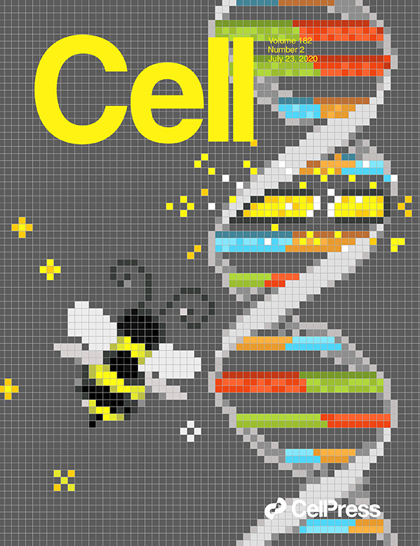
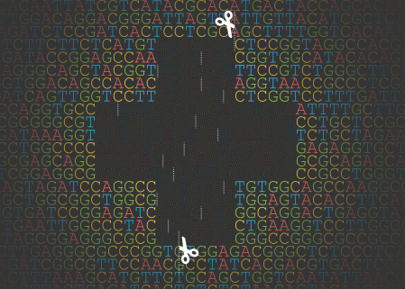

Max W. Shen
Hi, I am a Senior Scientist at Genentech. I lead a small lab on foundational machine learning research motivated by problems in science and medicine.
Forbes 30 under 30, Science.
maxwshen [at] gmail.com
Google Scholar
 SF Bay Area, CA, USA
SF Bay Area, CA, USA
 GitHub
GitHubI did my PhD at MIT, where my work was published in Nature, Cell (with a front cover featuring my pixel artwork), Nature Biotechnology, and invited for a talk at a NeurIPS workshop on ML for biology. My dissertation was advised by David R. Liu and Aviv Regev. Before that, I graduated summa cum laude from U.C. San Diego.
Publications and work
Reconstruction of evolving gene variants and fitness from short sequencing reads
Max W Shen, Kevin T. Zhao, David R. Liu
Invited talk at NeurIPS 2020, Learning Meaningful Representations of Life Workshop
Nature Chemical Biology, 2021.
 
Determinants of Base Editing Outcomes from Target Library Analysis and Machine Learning
Max W Shen*, Mandana Arbab*, Beverly Mok, Christopher Wilson, Żaneta Matuszek, Christopher A. Cassa, David R. Liu
Cell, 2020. My artwork was featured on the cover of the July 23, 2020 issue!
[Co-first author reordering approved by all co-first authors]
[Code] [Interactive web app]
 
Predictable and precise template-free CRISPR editing of pathogenic variants
Max W Shen*, Mandana Arbab*, Jonathan Y Hsu, Daniel Worstell, Sannie J Culbertson, Olga Krabbe, Christopher A Cassa, David R Liu, David K Gifford, Richard I Sherwood
Nature, 2018
[Code] [Interactive web app] [Press feature by Dash plotly for data visualization]
Development of C•G-to-G•C transversion base editors from CRISPRi screens, target-library analysis and machine learning
Luke W Koblan*, Max W Shen*, Mandana Arbab, Jeffrey A Hussmann, Andrew V Anzalone, Jordan L Doman, Gregory A Newby, Dian Yang, Beverly Mok, Joseph M Replogle, Albert Xu, Tyler A Sisley, Jonathan S Weissman, Britt Adamson, David R Liu
Nature Biotechnology, 2021. In press.
Detection of gene cis-regulatory element perturbations in singlecell transcriptomes
Grace H.T. Yeo, Oscar Juez, Qing Chen, Budhaditya Banerjee, Lendy Chu, Max W Shen, May Sabry, Ive Logister, Richard I Sherwood, David K Gifford
PLOS Computational Biology, 2021.
PrimeDesign software for rapid and simplified design of prime editing guide RNAs
Jonathan Y Hsu, Julian Grünewald, Regan Szalay, Justine Shih, Andrew V Anzalone, Kin Chung Lam, Max W Shen, Karl Petri, David R Liu, Keith Joung, Luca Pinello
Nature Communications, 2021.
Machine learning based CRISPR gRNA design for therapeutic exon skipping
Wilson Louie, Max W Shen, Zakir Tahiry, Sophia Zhang, Daniel Worstell, Christopher A Cassa, Richard I Sherwood
PLOS Computational Biology, 2021.
Comprehensive Mapping of Key Regulatory Networks that Drive Oncogene Expression
Lin Lin, Benjamin Holmes, Max W. Shen, Darnell Kammeron, Niels Geijsen, David K Giffiord, Richard I Sherwood
Cell Reports, 2020.
Continuous evolution of SpCas9 variants compatible with non-G PAMs
Shannon M Miller*, Tina Wang*, Peyton B Randolph, Mandana Arbab, Max W Shen, Tony P Huang, Zaneta Matuszek, Gregory A Newby, Holly A Rees, David R Liu
Nature Biotechnology, 2020
[Code]
Assembly of long error-prone reads using de Bruijn graphs
Yu Lin*, Jeffrey Yuan*, Mikhail Kolmogorov, Max W Shen, Mark Chaisson, Pavel A Pevzner
Proceedings of the National Academy of Sciences, 2016
plasmidSPAdes: assembling plasmids from whole genome sequencing data
Dmitry Antipov, Nolan Hartwick, Max W Shen, Mikahil Raiko, Alla Lapidus, Pavel A. Pevzner
Bioinformatics, 2016
MEG source imaging method using fast L1 minimum-norm and its applications to signals with brain noise and human resting-state source amplitude images
Ming-Xiong Huang, Charles W Huang, Ashley Robb, AnneMarie Angeles, Sharon L Nichols, Dewleen G Baker, Tao Song, Deborah L Harrington, Rebecca J Theilmann, Ramesh Srinivasan, David Heister, Mithun Diwakar, Jose M Canive, J Christopher Edgar, Yu-Han Chen, Zhengwei Ji, Max W Shen, Fady El-Gabalawy, Michael Levy, Robert McLay, Jennifer Webb-Murphy, Thomas T Liu, Angela Drake, Roland R Lee
Neuroimage, 2014
Teaching
Causal Inference & Deep Learning
MIT independent activites period, Jan. 2018
Max W. Shen, Fredrik Johansson
○ Prepared and co-taught a short graduate-level class with 4 sessions and 6 total h. Typical attendance: 20 students.
Applied Probabilistic Programming & Bayesian Machine Learning
MIT independent activites period, Jan. 2017
Max W. Shen, Alvin Shi, Carles Boix
○ Prepared and co-taught a short upper-division class with 6 sessions and 9 total h. First class attendance: 100 students, typical attendance: 25 students.
Max W. Shen is a Senior Scientist at Genentech, leading a small lab on foundational machine learning research.
This website was designed with Skeleton CSS.